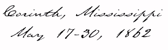
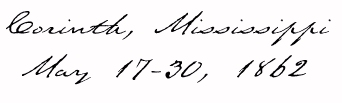
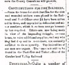
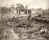
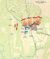

Report of Brig. Gen. Alexander McCook
Commander of Second Division, April 8 to May 30


"The 77th in another battle"
Valley Spirit, May 7, 1862
Col. Housum returns to Chambersburg,
Valley Spirit, May 14, 1862
"Nip
Scott an individual of the
kullered persuasion..." Valley Spirit, May 21, 1862
"Contributions for the
Soldiers,"
Valley Spirit, May 28, 1862



Capt. McKesson receives Surgeon's
approval for leave of absence, May 14, 1862
Extention of McKesson's sick leave
granted, July 18, 1862






Siege of Corinth, from
The Civil War Battle Atlas
Physical description from Sgt. John
Obreiter's History of the Regiment